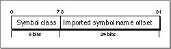
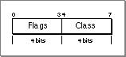

Legacy Document
Important: The information in this document is obsolete and should not be used for new development.
Important: The information in this document is obsolete and should not be used for new development.


Imported Libraries and Symbols
The loader section must describe every import library required by the fragment and the symbols imported from those libraries. The following two sections describe the format of these descriptions.Imported Library Descriptions
An imported library description, which contains information about a required import library, is of fixed size (24 bytes) and has the form shown in Listing 8-4.Listing 8-4 Imported library description data structure
struct PEFImportedLibrary { UInt32nameOffset; UInt32oldImpVersion; UInt32currentVersion; UInt32importedSymbolCount; UInt32firstImportedSymbol; UInt8 options; UInt8 reservedA; UInt16reservedB; };The fields of the description are as follows:
- The
nameOffsetfield (4 bytes) indicates the offset (in bytes) from the beginning of the loader string table to the start of the null-terminated library name.- The
oldImpVersionandcurrentVersionfields (4 bytes each) provide version information for checking the compatibility of the imported library.- The
importedSymbolCountfield (4 bytes) indicates the number of symbols imported from this library.- The
firstImportedSymbolfield (4 bytes) holds the (zero-based) index of the first entry in the imported symbol table for this library.- The
optionsbyte contains bit flag information as follows:
- The high-order bit (mask 0x80) controls the order that the import libraries are initialized. If set to
0, the default initialization order is used, which specifies that the Code Fragment Manager should try to initialize the import library before the fragment that imports it. When set to1, the import library must be initialized before the client fragment.- The next bit (mask 0x40) controls whether the import library is weak. When set to
1(weak import), the Code Fragment Manager continues preparation of the client fragment (and does not generate an error) even if the import library cannot be found. If the import library is not found, all imported symbols from that library have their addresses set to0. You can use this information to determine whether a weak import library is actually present.
- The reservedA and reservedB fields are currently reserved and must be set to
0.
The Imported Symbol Table
The imported symbol table is an array of imported symbol entries. Symbols imported from the same library are grouped together in the table, but they may appear in any order within that grouping. A table entry is of fixed size (4 bytes) and has the form shown in Figure 8-7.Figure 8-7 An imported symbol table entry

The elements of the table entry are as follows:
The symbol class byte of an imported symbol entry is structured as shown in Figure 8-8.
- The symbol class field (1 byte) designates the class of the imported symbol.
- The imported symbol name offset field (3 bytes) indicates the offset (in bytes) from the beginning of the loader string table to the null-terminated name of the symbol.
Figure 8-8 A symbol class field

For imported symbols, the high-order flag bit (mask 0x80) indicates whether the symbol is weak. When this bit is set, the imported symbol does not have to be present at fragment preparation time in order for execution to continue. However, your code must check that the imported symbol exists before attempting to use it. The other flag bits are currently reserved.
The symbol classes are defined in Table 8-3. The symbol classes are used for annotation only.